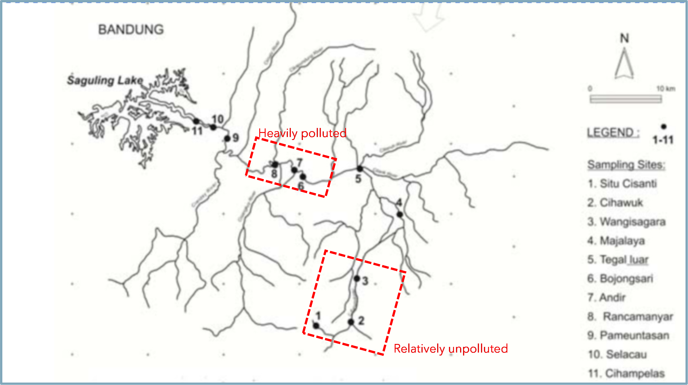
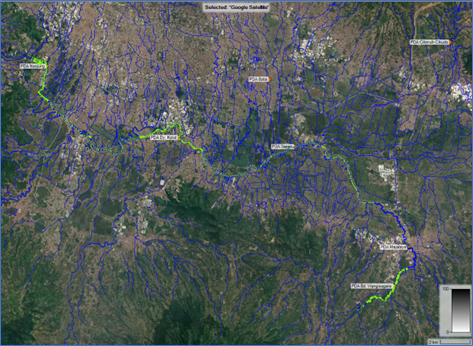

Secara global, penggunaan air yang berlebihan menyebabkan masalah lingkungan yang sangat serius dalam beberapa dekade terakhir (Vörösmarty et al. 2010). Air yang dibutuhkan oleh manusia naik secara eksponensial semenjak masa pra-industrialisasi khususnya setelah tahun 1950-an (Schmutz and Sendzimir 2018). Krisis air yang terjadi bukan hanya terjadi dari sudut pandang manusia, namun juga biota air sungai yang hidup didalamnya. World Wide Fund for Nature atau WWF (2020), menyebutkan bahwa hingga 84% hewan air tawar di seluruh dunia telah berkurang sejak tahun 1970.
Di Indonesia sendiri, perubahan regim hidrologis akibat kegiatan manusia seperti ekstraksi dan okupasi menyebabkan bertambahnya debit banjir dan berkurangnya debit andalan di Sungai Citarum Hulu (Nurcahyo et al. 2016). Hal tersebut terjadi hampir bersamaan dengan rusaknya habitat ikan endemik yang ada (Istiqomah et al. 2021; Sunardi et al. 2012; Kartamihardja 2019). Kondisi tersebut menunjukkan bahwa Sungai Citarum Hulu dalam keadaan yang tidak baik karena keberagaman ikan merupakan salah satu indikator ekosistem sungai yang sehat (Leigh et al. 2012).
Dalam bidang hidrologi, mitigasi untuk krisis air dan habitat sungai diatas sebenarnya sudah diakomodasi dengan penentuan debit lingkungan (environmental flow). Acreman and Dunbar (2004), mendefinisikan Debit lingkungan sebagai kuantitas atau volume air yang dibutuhkan dari waktu ke waktu untuk menjaga kesehatan sungai di suatu keadaan tertentu, di mana keadaan tersebut harus ditentukan sebelumnya atau disepakati berdasarkan trade-off dengan pertimbangan lain”.
Terdapat 207 metode yang bisa digunakan untuk menghitung debit lingkungan Stamou et al. (2018). Metode-metode tersebut kemudian bisa diklasifikasikan menjadi 4 (empat) bagian: hidrologi, hidraulik, habitat, dan holistik Tharme (2003) Metode probabilitas Q95SNI 6738:2015 (2015) yang umumnya digunakan di Indonesia masuk dalam klasifikasi metode hidrologi. Efektivitas penerapan metode Q95 ini masih perlu dikaji terutama terhadap respon balik habitat yang ada di sungai mengingat parameter yang dijadikan acuan hanya nilai debit tertentu.Hal ini sebenarnya bisa berbahaya karena konsekuensi perhitungan debit lingkungan yang sederhana bisa menimbulkan resiko kepada integritas masa depan dan keanekaragaman hayati dari ekosistem sungai Arthington et al. (2006) Untuk itu perlu dilakukan kajian mengenai efektivitas metode yang umum digunakan beserta perbandingannya dengan metode lain dengan parameter yang lebih beragam serta kompleksitas yang lebih tinggi.
1.2 Masalah Penelitian
Beberapa masalah penting yang akan dikaji pada penelitian ini adalah:
Apa metode perhitungan debit lingkungan yang paling sesuai untuk digunakan di sungai Citarum hulu?
Berapa nilai debit yang diperlukan untuk kelangsungan hidup ekosistem di sungai Citarum hulu?
Seberapa besar gap atau selisih debit lingkungan terhadap debit eksisting?
Upaya apa yang bisa digunakan untuk mencapai dan mempertahankan debit lingkungan tersebut?
1.3 Maksud dan Tujuan Penelitian
Maksud dari penelitian ini adalah:
Melakukan analisa kesenjangan (gap) debit.
Mengidentifikasi kondisi habitat di sungai Citarum hulu.
Mengkaji Metode debit lingkungan yang paling tepat digunakan di sungai Citarum hulu.
Sedangkan Tujuan yang ingin diperoleh pada penelitian ini adalah:
Memperoleh nilai debit lingkungan yang mengakomodir kondisi hidrologi, peraturan/undang-undang yang ada, serta kebutuhan ekosistem habitat.
Mendapatkan nilai gap debit lingkungan terhadap debit sekarang.
Memperoleh metode yang paling tepat untuk menentukan parameter debit lingkungan yang sesuai dengan kondisi lapangan
1.4 Lingkup Studi
Beberapa hal yang dilingkup dalam studi ini adalah:
Melakukan pengumpulan data/kompilasi data yang terdiri atas data hidrologi, data karakteristik sungai, data topografi, data tutupan lahan, data habitat perairan.
Melakukan studi literatur.
Melakukan analisis hidrologi, meliputi analisis low flow analysis serta kesenjangan (gap) rata-rata debit dalam periode tertentu..
Melakukan analisis hirolika, meliputi analisis terhadap data dan topografi, analisis karakteristik profil muka air, dan melakukan simulasi hidrolik 1D dengan menggunakan program HEC-RAS.
Melakukan analisa kurva habitat.
1.5 Batasan Masalah
Mengingat keterbatasan waktu dalam penyusunan tesis ini maka kajian dibatasi
pada beberapa hal berikut:
Lokasi kajian berada di Sungai Citarum hulu diutamakan pada daerah yang telah dilakukan kajian habitat ikan yaitu Bojongsari, Andir, dan Rancamanyar (lihat pada Gambar 1.1)
Analisis yang dilakukan adalah analisis hidrologi dan hidrolika. Tidak dibahas kualitas air, infiltrasi, sedimentasi, temperatur, pelaksanaan maupun studi kelayakan ekonomi. Lihat
Analisis profil muka air/elevasi muka air dilakukan mulai Sapan hingga Nanjung pada ruas Citarum. lihat pada Gambar 1.2

Gambar 1.1. Titik Sampling Habitat Ikan di Sungai Citarum Hulu (Sukardi et al., 2012)

Gambar 1.2. Sungai Citarum Hulu (Ruas Sapan – Nanjung)
1.6 Lokasi Kajian
Lokasi dalam penelitian ini adalah ruas Sungai Citarum hulu khususnya di 8 (delapan) titik pengamatan. Yaitu:
Situ Cisanti, Desa Tarumajaya, Kecamatan Kertasari, Kab. Bandung;
Cihawuk, Desa Cibeureum, Kecamatan Kertasari, Kab. Bandung;
Bd. Wangisagara, Desa Karyalaksana, Kecamatan Ibun, Kab. Bandung;
Majalaya, Desa Majalaya, Kecamatan Majalaya, Kab. Bandung;
Tegalluar, Desa Sumbersari, Kecamatan Ciparay, Kab. Bandung;
Bojongsari, Desa Bojongsari, Kecamatan Bojongsoang, Kab. Bandung;
Rancamanyar, Desa Rancamanyar, Kecamatan Baleendah, Kab. Bandung;
Nanjung, Desa Jelegong, Kecamatan Kutawaringin, Kab. Bandung;
Lokasi-lokasi tersebut dipilih karena selain terdapat empat titik pengamatan debit (PDA Majalaya, Sapan, Dayeuhkolot, dan Nanjung) juga penelitian mengenai habitat perairan telah banyak dilakukan di lokasi ini. ( Arif (2012), Istiqomah et al. (2021), Sunardi et al. (2012), Kartamihardja (2019)).
Gambar 1.3. Lokasi Tinjauan (Diadaptasi dari Sunardi et. al, 2012)
1.7 Sistematika Penulisan
Dalam kajian ini, sistimatika pembahasan yang dilakukan adalah sebagai berikut:
Bab I Pendahuluan
Dalam Bab I menjelaskan tentang Latar Belakang yang mendasari dipilihnya penelitian ini, Masalah Penelitian, Maksud dan Tujuan, Lingkup Studi, Batasan Masalah, Lokasi Kajian serta Sistimatika Penulisan yang dilakukan untuk menyelesaikannya.
Bab II Tinjauan Pustaka
Berisi tentang studi terdahulu yang berkaitan dengan lokasi kajian, uraian teori ataupun pedoman yang berkaitan dengan permasalahan secara teoritis yang dipakai dalam studi ini.
Bab III Gambaran Umum
Pada bab ini akan diuraikan mengenai kondisi
Bab IV Metodologi Penelitian
Pada bab ini akan diuraikan metodologi yang dilaksanakan dalam penelitian ini, yang mencakup alur pikir, metode pelaksanaan kegiatan termasuk dalam pengumpulan data sampai dengan simulasi model.
Bab V Analisis dan Pembahasan
Pada bab ini akan dibahas mengenai hasil dari pengumpulan data, analisis hidrologi dengan FDCA, analisis hidrolika, simulasi yang dilakukan menggunakan perangkat lunak HEC-RAS (untuk mendapatkan karakteristik hidrolika), tinjauan berdasarkan aturan lingkungan, dan analisa kecocokan habitat.
Bab VI Kesimpulan
Acreman, M. C., and M. J. Dunbar. 2004. “Defining Environmental River Flow Requirements a Review.”Hydrology and Earth System Sciences 8 (5): 861–76. https://doi.org/10.5194/hess-8-861-2004.
Arif, Hasan Kamil. 2012. “KELIMPAHAN DAN KEANEKARAGAMAN IKAN DI SUNGAI CITARUM HULU,” 14.
Arthington, Angela H., Stuart E. Bunn, N. LeRoy Poff, and Robert J. Naiman. 2006. “THE CHALLENGE OF PROVIDING ENVIRONMENTAL FLOW RULES TO SUSTAIN RIVER ECOSYSTEMS.”Ecological Applications 16 (4): 1311–18. https://doi.org/10.1890/1051-0761(2006)016[1311:TCOPEF]2.0.CO;2.
Istiqomah, Nadia, Miranti Ariyani, Kabul Fadilah, Desak Made Malini, Syifa Yolanda, Azalea Putri, and Nining Ratningsih. 2021. “Citarum River Water Pollution and Stress Responses in The Tolerant and Sensitive Fish,” June, 13. https://doi.org/https://doi.org/10.51264/inajl.v2i1.10.
Kartamihardja, Endi. 2019. “Degradasi Keanekaragaman Ikan Asli di Sungai Citarum, Jawa Barat.”Warta Iktiologi 3 (November): 1–8.
Leigh, Catherine, Xiaodong Qu, Yuan Zhang, Weijing Kong, Wei Meng, Peter Hanington, Robert Speed, et al. 2012. “Assessment of River Health in the Liao River Basin (Taizi Sub-Catchment).”International Water Centre, June, 131.
Nurcahyo, Hadi, Indratmo Soekarno, Iwan K Hadihardaja, and Arief Rosyidie. 2016. “Hydrologic Alteration in Watershed Using Flow Duration Curve, Case Study Upper Citarum Watershed, Indonesia.”International Proceedings of Chemical, Biological and Environment Engineering Volume of IPCBEE (2016): 7. https://doi.org/10.7763/IPCBEE. 2016. V94. 24.
Schmutz, Stefan, and Jan Sendzimir, eds. 2018. Riverine Ecosystem Management: Science for Governing Towards a Sustainable Future. Cham: Springer International Publishing. https://doi.org/10.1007/978-3-319-73250-3.
SNI 6738:2015. 2015. “SNI 6738:2015 Perhitungan Debit Andalan Sungai Dengan Kurva Durasi Debit.”
Stamou, A., A. Polydera, G. Papadonikolaki, F. Martínez-Capel, R. Muñoz-Mas, Ch. Papadaki, S. Zogaris, M.-D. Bui, P. Rutschmann, and E. Dimitriou. 2018. “Determination of Environmental Flows in Rivers Using an Integrated Hydrological-Hydrodynamic-Habitat Modelling Approach.”Journal of Environmental Management 209 (March): 273–85. https://doi.org/10.1016/j.jenvman.2017.12.038.
Sunardi, Keukeu Kaniawati, Teguh Husodo, Desak Made Malini, and Annisa Joviani Astari. 2012. “Distribution of Fish in the Upper Citarum River: An Adaptive Response to Physico-Chemical Properties” 19: 6.
Tharme, R. E. 2003. “A Global Perspective on Environmental Flow Assessment: Emerging Trends in the Development and Application of Environmental Flow Methodologies for Rivers.” River Research and Applications 19: 397441.”
Vörösmarty, C. J., P. B. McIntyre, M. O. Gessner, D. Dudgeon, A. Prusevich, P. Green, S. Glidden, et al. 2010. “Global Threats to Human Water Security and River Biodiversity.”Nature 467 (7315): 555–61. https://doi.org/10.1038/nature09440.